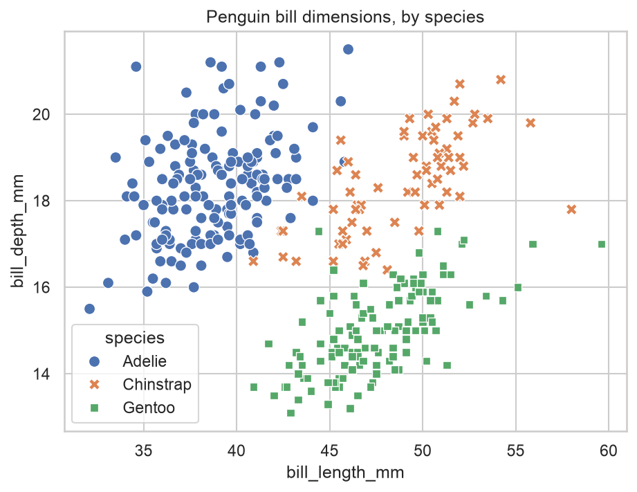
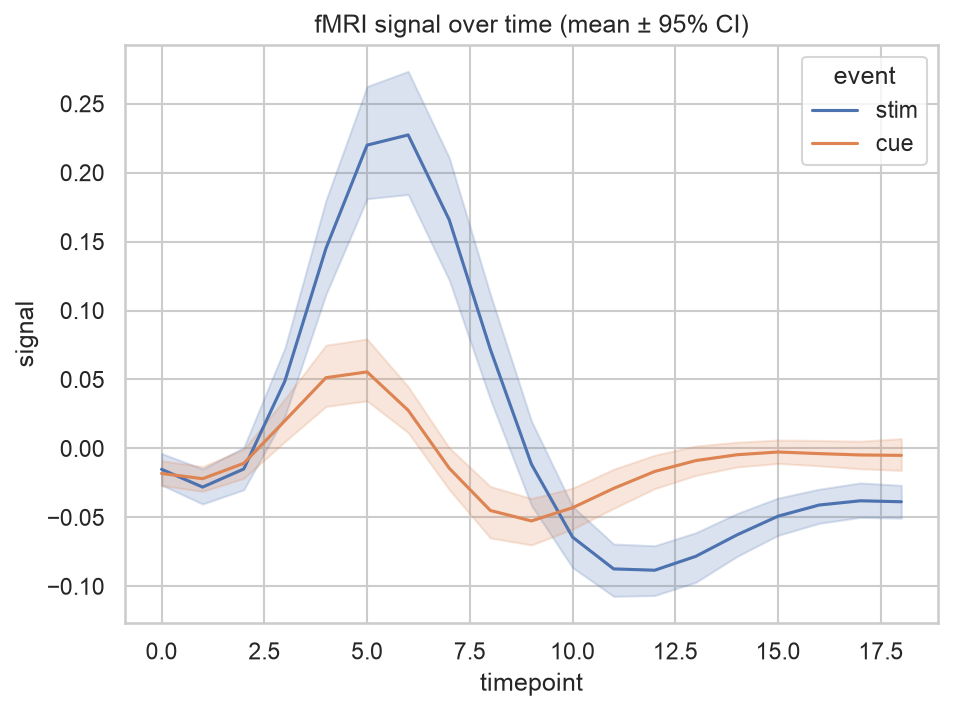
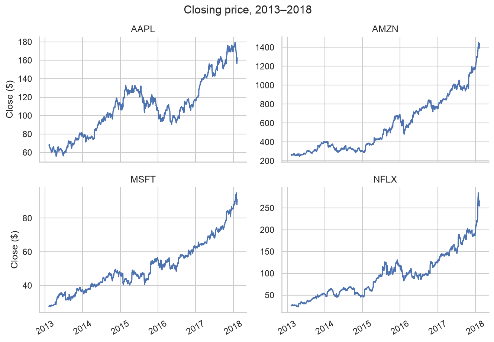
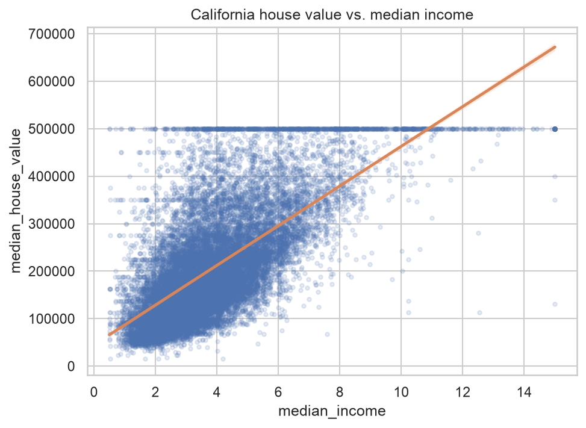
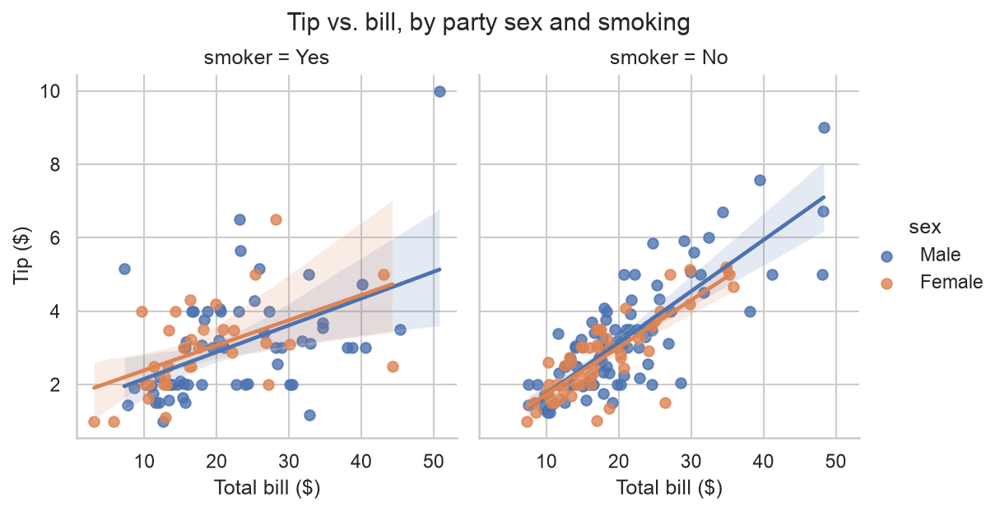
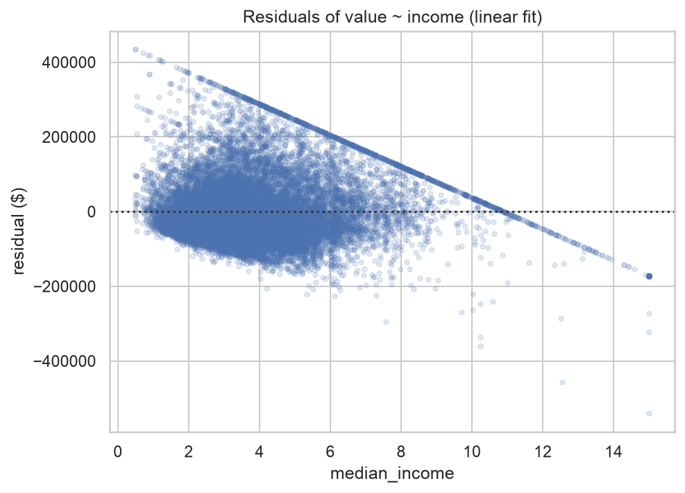

Home › 1 · Relationships between variables
1 · Relationships between variables
how do two variables move together — and how well does a fitted model describe that relationship?
| Function | Level | Dataset | In one line |
|---|---|---|---|
scatterplot | axes | penguins | raw points: the relationship between two numeric variables |
lineplot | axes | fmri | a trend along an ordered axis, with a confidence band |
relplot | figure | sp500 | scatter / line split into small multiples by a category |
regplot | axes | california_housing | a scatter with a fitted regression line |
lmplot | figure | tips | faceted regression across subsets |
residplot | axes | california_housing | residuals of a fit — is the model adequate? |
one minimal, idiomatic example per function. Each example ends by saving a PNG to images/.
Imports for this notebook
import matplotlib.pyplot as plt
import pandas as pd
import seaborn as sns
from load_data import load_data
# House style for the whole notebook. Kept deliberately light: this project is
# about *which* chart to use, not fine visual polish.
sns.set_theme(style="whitegrid")
# Datasets used below. Built-ins come from seaborn; the two larger ones come
# from Kaggle via load_data() (downloaded once, then read from data/).
penguins = sns.load_dataset("penguins")
fmri = sns.load_dataset("fmri")
tips = sns.load_dataset("tips")
housing = load_data("california_housing")
sp500 = load_data("sp500")
scatterplot
Axes-level. One point per row: the most direct view of how two numeric variables
relate. Extra variables map onto hue, size, style without changing the chart.

sns.scatterplot(
data=penguins,
x="bill_length_mm", y="bill_depth_mm",
hue="species", style="species",
s=60, ax=ax,
)
ax.set_title("Penguin bill dimensions, by species")
Best for
- Two continuous variables, one row per observation — the first look at whether and how they relate.
- Layering in a third or fourth variable through
hue/size/style. - Spotting clusters, outliers and non-linear shape before modelling anything.
- Not when N is large and points pile up (overplotting) — switch to a 2-D
histplot/kdeplot, or usealphaand sampling.
Note the trap this chart catches: pooled across species the cloud slopes down, but
within each species the relationship is positive (Simpson's paradox). hue is what
reveals it.
lineplot
Axes-level. Connects points along an ordered axis. When there are several observations per x value it aggregates them (mean by default) and draws a confidence band.

sns.lineplot(
data=fmri,
x="timepoint", y="signal",
hue="event", errorbar=("ci", 95),
ax=ax,
)
ax.set_title("fMRI signal over time (mean ± 95% CI)")
Best for
- A response measured along an ordered axis — time, dose, position — where connecting points implies continuity.
- Data with repeats per x:
lineplotcollapses them to an estimator and shades the uncertainty automatically (errorbar=("ci", 95),"se",("pi", 95), …). - Comparing a handful of series with
hue. - Not for unordered categories (the line invents a trend that isn't there), and not for dozens of overlapping series ("spaghetti") — facet instead.
relplot
Figure-level. The same scatter or line (kind="scatter" / "line"), but split
into a grid of small multiples with row / col. Returns a FacetGrid.

tickers = ["AAPL", "MSFT", "AMZN", "NFLX"]
subset = sp500[sp500["ticker"].isin(tickers)]
g = sns.relplot(
data=subset,
x="date", y="close", col="ticker",
kind="line", col_wrap=2,
height=3, aspect=1.5,
facet_kws={"sharey": False},
)
g.set_titles("{col_name}")
g.set_axis_labels("", "Close ($)")
for ax in g.axes.flat:
ax.tick_params(axis="x", rotation=30)
g.figure.suptitle("Closing price, 2013–2018", y=1.03)
Best for
- Taking a
scatterplot/lineplotand asking the same question across many subgroups, when one overlaid plot would be too busy. - Figure-level conveniences: it owns the whole figure, wraps facets (
col_wrap), and places one shared legend outside the axes. facet_kws={"sharey": False}when panels live on very different scales (as here).- Not when you need to drop the plot onto a specific matplotlib
Axesor combine it with other artists — use the axes-levelscatterplot/lineplotfor that.
regplot
Axes-level. A scatter plus an ordinary-least-squares line with a bootstrap confidence band — a fit you can eyeball, in one call.

sns.regplot(
data=housing,
x="median_income", y="median_house_value",
scatter_kws={"alpha": 0.15, "s": 10},
line_kws={"color": "C1"},
ax=ax,
)
ax.set_title("California house value vs. median income")
Best for
- A fast look at direction and rough strength of a relationship before building a real model.
- Checking for curvature with
order=2(polynomial) orlowess=True(local regression). - Not a modelled fit: no coefficients, no R², no diagnostics. The flat strip along the top is the $500,001 cap baked into this dataset, and the way the spread widens with income is a warning the straight-line fit is too optimistic — which the next chart makes explicit.
lmplot
Figure-level. regplot's fit, drawn on a FacetGrid: split by col / row
and/or hue to ask whether the relationship holds in every subgroup.

g = sns.lmplot(
data=tips,
x="total_bill", y="tip",
col="smoker", hue="sex",
height=4, aspect=0.9,
)
g.set_axis_labels("Total bill ($)", "Tip ($)")
g.figure.suptitle("Tip vs. bill, by party sex and smoking", y=1.03)
Best for
- "Does this trend look the same for everyone?" — one fitted line per facet / colour, on shared axes for easy comparison.
- Anything
regplotaccepts (order,logistic,lowess,robust) carried across the grid. - Not for a single panel (use
regplot) or for scatters you don't want a regression on (userelplot).
residplot
Axes-level. Fits a line, then plots the residuals against the predictor. If the linear model fits well, this is a shapeless band around zero.

sns.residplot(
data=housing,
x="median_income", y="median_house_value",
scatter_kws={"alpha": 0.15, "s": 10},
ax=ax,
)
ax.set_title("Residuals of value ~ income (linear fit)")
ax.set_ylabel("residual ($)")
Best for
- Diagnosing a linear fit: random scatter around zero ⇒ a straight line is enough.
- Seeing what the fit missed — a smile / frown means curvature; a fan or funnel means the variance grows (heteroscedasticity).
- Here the residuals bow below zero in the middle (curvature) and fan out as income rises (heteroscedasticity): a straight line is the wrong shape. The crisp diagonal edge along the top is the $500,001 cap again — for those rows the residual is forced to shrink as income grows.
- Not an outlier flag or a normality test — it only shows structure left over from the mean fit. Add
lowess=Trueto draw the trend through the residuals.